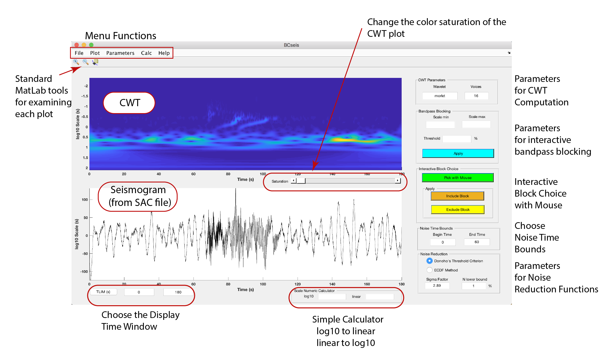

OVERVIEW
Here is a view of the GUI after a seismogram has been read and the
CWT computed:

Functionality
- The purpose of the GUI is to allow
experimentation with various block thresholding schemes on
single trace seismic data to gain intuition on designing
appropriate noise reduction workflows.
- A seismic data trace in SAC (Seismic Analysis
Code) format is read into the GUI, a continuous wavelet
transform (CWT) computed, and then processed using a variety
of block thresholding tools.
- Operations are performed by choosing various
menu functions and using the color buttons on the GUI.
- Once a flow has been determined, the MatLab
function "BCseis_process" can be used to process a suite of
seismograms.
Menu Functions
- File: Read and
write SAC files
- Plot: Plot the
current CWT and Seismogram on a separate plot
- Parameters:
Choose the wavelet type and resolution. Parameters will
be displayed in the box to the upper right on the GUI.
- Calc: Refresh to
original data and CWT, Undo last action, Compute CWT, Estimate
Noise, Hard Threshold Noise, Soft Threshold Noise, Hard
Threshold Signal, Soft Threshold Signal, SNR Detector.
- Help: Access the
help webpages
Interactive
Bandpass Blocking
- Choose a band in scale and remove or reduce
its amplitude.
- The simple calculator at the bottom can be
used with the MatLab data tip to determine a bandpass directly
from the CWT scalogram.
Interactive
Block Choice with Mouse
- Pick a region on the CWT plane to either keep
and exclude all other CWT coefficients ("Include Block") or
remove ("Exclude Block")
Choose Noise Time Bounds
- Enter the begin and end times of the region of
the seismogram that will be used to estimate the noise.
Parameters for Noise Reduction Functions
- "Sigma Factor" is used in hard and soft
thresholding of the signal using the chosen noise region. If
"Donoho's Threshold Criterion" radiobutton is pushed, then
sigma factor is calculated from the noise estimate.
- "N lower bound" is used in the SNR Detector
function
Simple Calculator
- Enter numbers in either box and the calculator
will convert to log10 from linear or linear to log10 after
hitting the return button on the keyboard.
Choose the Display Time Window
- begin and end time for the seismogram and CWT
plots. Press the "TLIM" button to replot.
Change the color saturation of the CWT plot
- Use the slider to increase the color
saturation of the CWT plot. This usually allows better
viewing of the CWT plot in interpreting what is signal and
noise.
Standard MatLab tools for examining each plot
- Magnify and demagnify tools allow details of
either plot to be informally examined. You may have to
press the "TLIM" button to refresh to the correct time window
display.
The datatip can be used to estimate times, amplitudes, and
scales.
The Canonical Seismogram
- Images on these help pages were taken from
screen shots of processing an explosion recorded by the IRIS
Wavefields Community Experiment that was deployed in
June-November 2016 (Network YW in IRIS parlance). The
data waveform can be found in /data.
To Main Menu